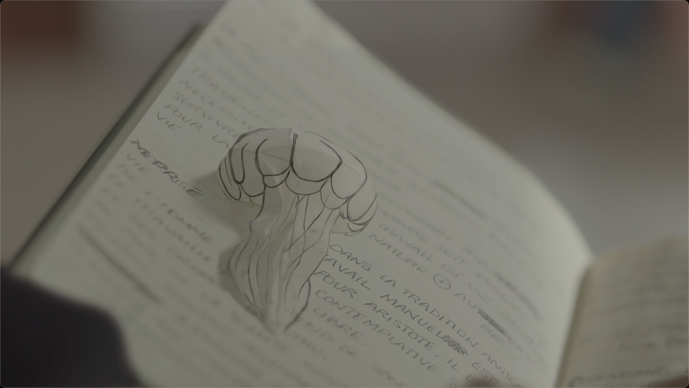

Challenge
Could a poetic VFX idea be prepared before the shoot?
Could a poetic VFX idea be prepared before the shoot?
Camera language, paper texture, daylight and live-action integration are aligned before production.
A clearer target for direction, cinematography, art department and VFX.
The notebook defines the visual seed of the sequence.
The idea is tested inside a real-shot language.

The drawing becomes a living presence while preserving natural light and camera language.
A fast way to align director, cinematographer, art department and VFX before production.